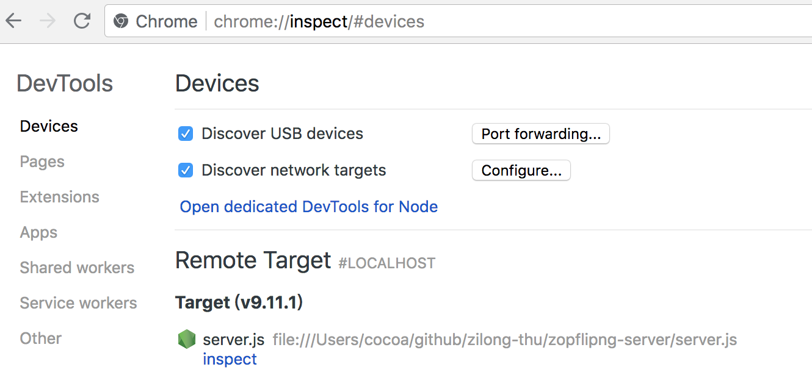
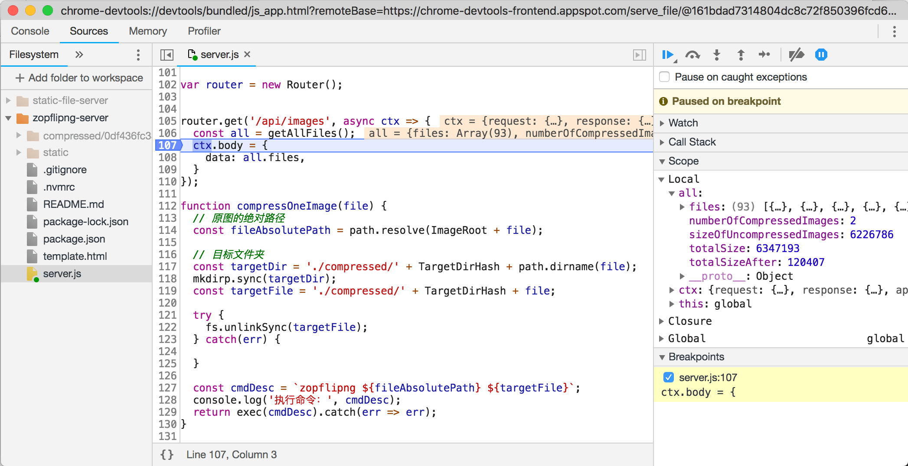

调试 NodeJS 程序
对于使用 V8 引擎的 Node 运行时来说，低版本可以采用 v8 debugger 协议获取到 v8 的运行过程；6.3+ 版本的 Node 则可以使用 v8 inspector 协议。
Inspector 协议
Node 6.3 及之后的版本新增了名为 v8-inspector 的调试协议。在启动 Node 脚本时，--inspect={PORT} 参数会创建一个单独的 Node 进程监听（通过 WebSockets）该端口（默认是 9229）上的调试命令。配合 Chrome 浏览器的 DevTools，可以方便地获取到该程序的运行信息。
$ node --inspect=9229 ./server.js
# 会输出如下信息，其中 0c48e445-f318-4bb7-85d9-32804ea111db 是该协议为每个 Node 进程分配的 UUID
Debugger listening on ws://127.0.0.1:9229/0c48e445-f318-4bb7-85d9-32804ea111db
Debugger attached.
关于 UUID[4]
UUID（Universally Unique IDentifier，通用唯一识别码），又称 GUID（Globally Unique IDentifier，全局唯一标识符），长度为 128 位二进制，表示为十六进制的话就是 32 位。一个合理的 UUID 生成算法必须能够做到对同一时空下的所有机器分配不同的标识符。
有点类似 Git 的摘要，但是 UUID 的生成通常会考虑时间，而 Git 则只使用内容作为摘要算法的输入。
在 Chrome 浏览器的地址栏里输入 chrome://inspect/#devices 并回车，可以看到对于该端口的监听（可能有一定的延时）：

点击上图里的 inspect，会调起 Chrome 的 DevTools 界面，在 Sources 模块中选择 JavaScript 程序所在目录，就可以像对浏览器端的 JavaScript 代码一样进行调试（例如设置断点）：

如果希望应用程序在运行第一行代码时就中断，可以使用 --inspect-brk=9229 来代替 --inspect=9229。这个功能对于调试那些只在启动时执行一次的代码比较有用。
远程调试
因为调试协议是基于网络协议 WebSockets，因此 Node 具备调试远程机器上的代码的能力。这意味着要让远程机器的调试接口暴露出来，因此不是特别安全。如果非要进行远程调试，首先要确保服务器上的程序也是以调试模式启动：
$ node --inspect=9229 server.js
假设该机器的 IP 地址为 10.2.3.4，那么在开发者的本地计算机上，建立一个 TCP 连接：
$ ssh -L 9221:localhost:9229 user@10.2.3.4
如此一来，本地机器的 9221 端口就直连了远程机器的 9229 端口。然后用 Chrome DevTools 9221 端口，就可以像之前那样进行调试了。
Debugger 协议
在 Node 7.7.0 之前（不含）的版本里，可以使用 Debugger 协议来调试 Node 程序。例如最早的 node-inspector 程序就是基于此协议。
# 安装 node-inspector
$ npm install -g node-inspector
# 以 debug 模式启动 app.js
$ node-debug app.js
当然，前端开发者应该尽量使用最新版本的 Node，配合 --inspect 来调试自己的 Node 程序。
VSCode 对 Node 调试的支持
除了借助于 Chrome DevTools 对 Node.js 程序进行调试，我们还可以使用 VSCode 的“附着”（attach）功能在编辑器里打断点对通过 --inspect 协议启动的 Node.js 程序进行调试。
此外，VSCode 的另外一种主要调试方式，是直接使用 VSCode 来启动 Node.js 程序。这种模式称为 "Launch"。
使用哪种方式进行调试，要取决于项目开发所采用的工作流。如果项目开发非常依赖 VSCode，Node.js 程序也要在 VSCode 里启动，自然就可以在 Launch 模式下调试；而如果项目的启动与运行并不打算依赖 VSCode，而是以其他的方式启动（Node 或者浏览器），那么使用 Attach 模式进行调试更为合适。